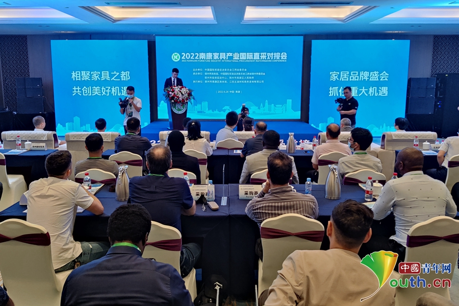
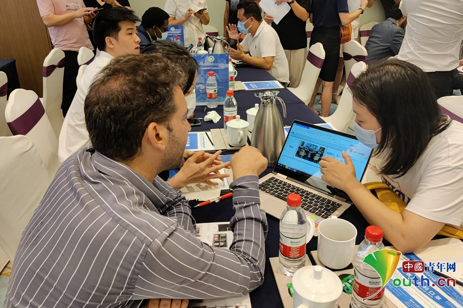

2022南康家具产业国际直采对接会现场。曾莎莎 摄
南康区政府副区长谭晓芳在致辞中表示，历经近30年发展，南康家具形成了从设计到研发再到生产销售的全产业链条，软体、板式、金属、石材等家具品类不断完善，办公、酒店、康养、智能家具等细分领域不断充实，“一网五中心”、数字化工厂、家居元宇宙等产业数字化成果不断涌现，300万平方米的家具大市场更是辐射活跃了整个南康家具销售市场。
赣州市贸促会会长黄锋章提出，希望南康家具产业把创新摆在发展全局的核心位置，挖掘创新增长潜力。依托南康工业家具（设计）中心，抢抓融入“粤港澳大湾区”机遇，积极引入更多高端设计人才和优质设计资源。提高企业家原创设计意识，大力提升研发设计能力，推出更多原创性、智能化高端家具产品，不断优化产品款式、性能和质量，提升核心竞争力。继续推动家具生产、研发、设计等环节改革创新，促进家具产业向高端智慧创造升级转型，由市场要素驱动向设计创新驱动转变，助推南康家具产业做大规模、做强品牌，把南康打造成为具有全球影响力的家居制造之都。

采购商与南康家具企业进行一对一采购洽谈。曾莎莎 摄
作为安哥拉中国商会的中国首席代表，贾雷·博蒂尼奥·费尔南德斯表示，中国和非洲在家具建材等领域的紧密合作有着具大的潜力，自己也一直在努力促进中国与安哥拉的商业合作和技术交流。家具是安哥拉从中国进口的主要产品之一，安哥拉的企业都十分希望与中国家具企业展开合作，实际上安哥拉不少企业已经有想法在中国进行投资了。同样地，也十分希望中国家具企业在安拉哥进行投资，给安哥拉家具行业带来先进的管理经验。
随后，在境外采购团与参会企业现场对接洽谈采购活动中，来自德国、波兰、白俄罗斯等26个国家的30多名境内外采购商组成的采购团，与60家南康家具企业进行一对一采购洽谈，为南康家具企业建平台、架桥梁、畅渠道。
采购商与南康家具企业成功签约。曾莎莎 摄
据了解，此次南康家具产业国际直采对接会是中国（赣州）第九届家具产业博览会系列活动之一。为了“打造具有全球影响力的家居制造之都”，实现让“世界有家的地方就有南康家具”的美好愿景，南康区委区政府规划建设了超300万平方米的20多个家具大市场，以及接近4.5万平米、兼有东西方美学的一站式全屋整装家居美学馆，形成了多点分布、遍地开花的家具销售市场分布格局，涵盖板式、软体、藤艺等全品类材质，实木、软体、办公等全品类分区，新中式、美式、欧式等全品类风格，囊括南康现有的所有家具品牌产品。各大市场年交易额超百亿元，市场面积和销售额均位居全国前列，是中部地区最大的家具专业批发市场，品牌度和美誉度不断上升。（曾莎莎）
-
台风“暹芭”残余环流继续北上 仍要保持高度警惕
7月5日，国家防办、应急管理部继续组织防汛防台风专题视频会商调度，研判台风“暹芭”残余环...
2022-07-05 21:27:00 -
天津公布5日0至18时新增5例本土无症状感染者详情
7月5日晚，天津市召开疫情防控第184场新闻发布会。发布会上，天津市疾病预防控制中心主任、天...
2022-07-05 21:24:00 -
安徽亳州现强降雨 城区部分街道积水没过膝盖
7月5日，安徽省亳州市现强降雨天气。当日下午，亳州市主城区谯城区部分街道和小区积水较深，...
2022-07-05 21:18:00 -
新东方直播火出圈？探寻知识输出新路径
近日，新东方旗下东方甄选直播间的双语直播带货爆红，董宇辉等人凭借独树一帜的“知识型带货...
2022-07-05 21:08:00 -
小学生论文答辩，离谱还是创新？
最近，云南昆明一小学举办的毕业论文答辩会，在网上引发争议。有网友表示“小学有论文答辩是...
2022-07-05 20:51:00 -
上海出台未成年人特别保护操作规程 7月6日起实施
上海市民政局、市高院、市检察院、市公安局等10部门联合制定了《上海市未成年人特别保护操作...
2022-07-05 20:48:00 -
不买平板电脑就进不了“智慧班”，教育岂是生意？
购买平板电脑就能进“智慧班”，否则只能进普通班。最近，云南省一中学“依据电脑分班”的做...
2022-07-05 20:48:00 -
6月26日至今日18时，安徽泗县共报告“218+847”
6月26日至7月5日18时，泗县共报告确诊病例218例，无症状感染者847例。目前正在开展第8轮核酸...
2022-07-05 20:47:00 -
上海社保缴费基数下限调整至每月6520元
“上海人力资源和社会保障”微信公众号5日发布《关于本市2022年度社保缴费基数上下限的通告》。
2022-07-05 20:45:00 -
广西全州县卫健局局长等多人停职检查
据广西日报消息，针对广西全州县卫健局不当处理信访事项的问题，按照广西壮族自治区党委要求...
2022-07-05 20:40:00 -
延安大学原副校长被逮捕！
日前，宝鸡市人民检察院依法以涉嫌受贿罪对马柏林作出逮捕决定。该案正在进一步办理中。
2022-07-05 20:21:00 -
24岁“矿二代”返乡种田 用现代农业技术助农增收
1998年出生的冯益广已经慢慢习惯“农民”这个新角色了。皮肤晒得黝黑，下地干活时，戴个大草...
2022-07-05 19:48:00 -
甘肃陇南：擘画七大产业助力高质量发展
7月4日，在甘肃陇南康县举行的“相约美丽陇南·携手共赢发展”民企陇南行活动开幕式上，陇南...
2022-07-05 19:28:00 -
北京市东城区打造国家文化出口基地再出实招
北京市东城区近日发布的《国家文化出口基地建设实施方案》（以下简称《实施方案》）提出，力...
2022-07-05 19:21:00 -
第五届数字中国建设峰会7月23日将在福州举行
国家网信办副主任曹淑敏在新闻发布会上表示，第五届数字中国建设峰会将于今年7月23日至24日在...
2022-07-05 19:03:00 -
向世界讲述：这十年中国资本市场发生了哪些变化
2012年中国共产党第十八次全国代表大会召开以来，中国各领域建设均取得了举世瞩目的成就。
2022-07-05 18:58:00 -
河南：个人积累式医疗保障转变为基金共济式保障
职工门诊待遇保障是这次医保改革的核心内容，河南将原来的个人积累式保障转变为基金共济式保障。
2022-07-05 18:40:00 -
河南职工医保改革后可实现“大共济”“小共济”
河南此次职工医保改革措施中，有一个重要的机制创新，就是实现“一个大共济，一个小共济”，...
2022-07-05 18:40:00 -
10年内投入100亿元！“新基石研究员项目”启动首次申报
备受科技领域关注的 “新基石研究员项目”正式启动申报了，申报时间为2022年7月1日至9月30日。
2022-07-05 18:32:00 -
中国公共关系协会推动建设合阳县民生文化数字书房
近日在中国公共关系协会的支持下，陕西省渭南市合阳县民生文化数字书房正式建立，标志着合阳...
2022-07-05 18:32:00 -
北京中同蓝博医学检验实验室3名犯罪嫌疑人被批准逮捕
北京市丰台区人民检察院经依法审查，于2022年7月5日以涉嫌妨害传染病防治罪，对北京市公安局...
2022-07-05 18:19:00 -
西安自7月6日0时起实行7天临时性管控措施
7月5日下午，市政府新闻办召开西安市新冠肺炎疫情防控工作新闻发布会（第76场），市疫情防控...
2022-07-05 17:32:00 -
北京高招录取7月6日启动 所报批次录取时间安排公布
据北京教育考试院消息，北京高招录取工作将于7月6日至30日进行。
2022-07-05 17:25:00 -
车队确认周冠宇将参加本周F1奥地利大奖赛
阿尔法罗密欧车队今日确认，队内车手周冠宇将参加本周进行的F1奥地利大奖赛。
2022-07-05 17:19:00 -
男篮世预赛第二阶段分组出炉 中国男篮面临挑战
北京时间7月5日，2023年男篮世界杯亚大区(亚洲/大洋洲地区)预选赛第二阶段分组出炉，中国男篮...
2022-07-05 17:18:00 -
7月4日以来北京新增阳性人员9人，是一位回国人员引发的聚集性疫情
北京市疾控中心副主任刘晓峰今日通报，7月5日0时至15时，北京新增本土新冠肺炎病毒感染者4例...
2022-07-05 17:04:00 -
北京延庆新增3例均为一酒店员工 风险点位涉核酸采样点、餐饮场所
2022-07-05 16:52:00 -
快改！这8个错误的锻炼方式，小心越练病越多！
老年人有哪些错误的锻炼方式？什么时候锻炼好？
2022-07-05 16:49:00 -
北京延庆区对风险点位涉及的街镇连续三天开展全员核酸检测
延庆区对所有风险人员采取上门方式进行核酸检测，对风险点位涉及的儒林街道、康庄镇、八达岭...
2022-07-05 16:49:00 -
北京：通州区潞邑街道珠江拉维小镇小区划为高风险区
高风险区实行封控措施，其间“足不出户、上门服务”，截至5日14时，完成珠江拉维小镇小区核酸...
2022-07-05 16:49:00 -
“网红校长”唐江澎连线教育部发布会 畅谈育人三大招
今天，江苏省锡山高级中学校长唐江澎在教育部召开的新闻发布会上进行了线上发言，唐校长指出...
2022-07-05 16:33:00 -
北京市延庆区划定2个高风险区
今天（7月5日），北京市召开第378场新冠肺炎疫情防控工作新闻发布会。
2022-07-05 16:23:00
- 京ICP备13016345号-8
- 京公网安备 11010102004843号
- 信息网络传播视听节目许可证0105108号
- 24小时违法和不良信息举报电话：010-64098588

共青团中央主办 中国青年报主管 中青网新媒体科技（北京）有限公司版权所有